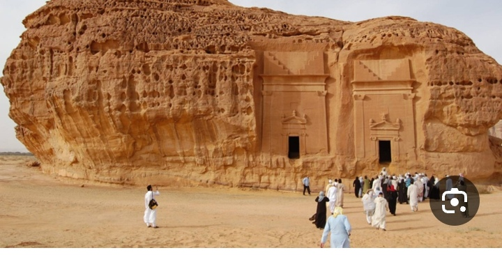
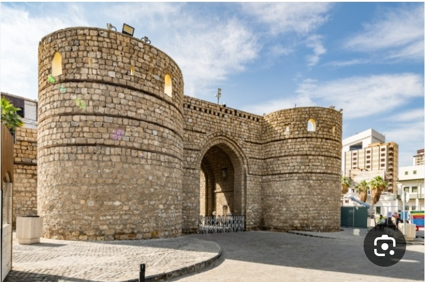
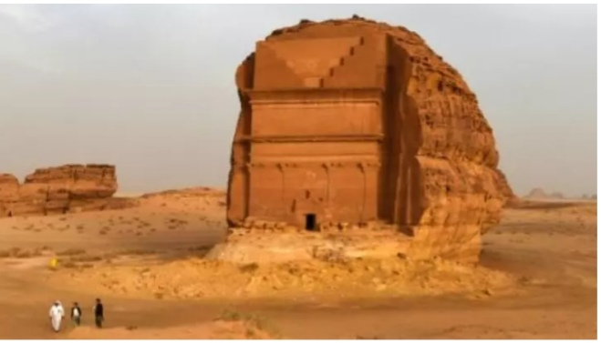

Registered Heritage Sites

Mada'in Saleh
The first Saudi site registered on the UNESCO World Heritage List in 2008, dating back to the Nabataean civilization in the 1st century BC.
More Details

Historic Jeddah
Registered on the World Heritage List since 2014, it contains historic buildings dating back to the 17th century with unique architecture.
More Details

Al-Ahsa Oasis
The largest palm oasis in the world, registered on the World Heritage List in 2018, containing archaeological sites dating back to the Neolithic period.
More Details